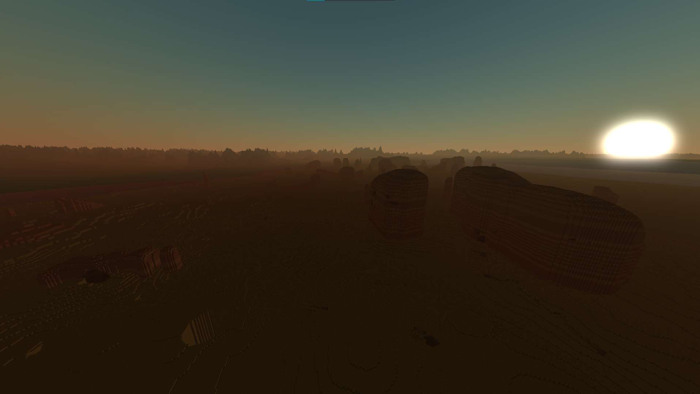

This is a hobby project I created for fun and learning.
It's a Minecraft clone, featuring:
All noise functions where written from scratch to gain a deep understanding of how to
create high-quality procedural generation with endless posibilities.
The rendering process is divided into three layers:
- Normal rasterization: Uses straightforward greedy meshing
- Ray Marching with 3x3 cubes, allowing visibility of structures from several kilometers away
-
A terrain layer that renders only the surface, including biomes and mountains.
This enables a render distance of up to 100km, sufficient when considering atmospheric fading in the distance.
The world is procedurally generated using various techniques:
- Biomes are distributed using Voronoi Noise
- Terrain height is determined by multiple layers of Perlin Noise
- Mountains and rivers are generated using Fractal Noise

To support multiplayer functionality, I developed a custom networking library with the following features:
- Client-server connection
- Reliable in-order message delivery
- Optional unordered message delivery (faster and uses less bandwidth)
The library was built using Winsock and UDP sockets. The goal was to provide both reliable but slower message delivery,
as well as faster, unreliable message options.
Unlike TCP, which only supports reliable messages, and pure UDP, which lacks connections and reliable in-order messaging, this library combines the best of both approaches.